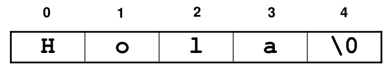

Introducción a punteros
Definición de arreglos, estructuras y cadenas de texto
Punteros
- Las variables que vimos hasta ahora son variables que contienen datos que tienen correlación con el mundo real/matemático
- Las variables puntero tienen direcciones de memoria. Sirven para guardar donde se encuentran las variables comunes en la computadora.
- Las variables puntero permiten acceso por referencia a variables comunes
- Los punteros son evidentes en cuando se usa código assembler y son una de las cosas que hacen potente (y complicado) usar al lenguaje C
Gráfico1: Código
int a=100;
int b=100;
int *p=&a;
int *q=&a;
/* O también:
* int *q=p;
*/
int *r=&b;
Gráfico2: Código
int x=4;
int *px=&x;
/* Donde:
* *px es - Es una variable puntero a un entero */
/* &x es - Direccion de x */
int *ppx=&px;
/* Donde:
* &px es - Direccion de px */
/* **px es - Es una variable puntero a un puntero a un entero */
¿Cómo usar punteros en C?
- Hay cuatro usos u operaciones básicas:
- Declarar una variable puntero a un tipo
- Conocer y guardar la dirección de una variable
- Obtener o recuperar el valor al qué apunta un puntero
- Recibir un puntero como parámetro (en una función)
Declarar una variable tipo puntero
- Declaración de un puntero
- Ejemplos:
-
int *p
- Declara un puntero p, que se utilizará para apuntar a un entero, se dice que p es un puntero a int
-
char *pc
- Declara el puntero pc, que se utilizará para apuntar a un carácter, se dice que pc es un puntero a char
Conocer la dirección de una variable
(operador &)
- &variable
- Devuelve la dirección en memoria de la variable
Ejemplo:
/* Declaro y creo en memoria una variable entera */
int v1, v2 = 10 ;
/* Declaro y creo un puntero a un entero.
* Contendrá la dirección de una variable entera
*/
int *pint ;
/* Inicializo el puntero con la dirección de memoria de la
* variable. Donde está el puntero se guardó la dirección
* de la variable entera
*/
pint = &v2;
Ahora que vimos el operador &...
¿Pueden ver por qué scanf() usa &?
Saber a qué apunta un puntero
(operador *)
* puntero devuelve el valor de lo
que está siendo apuntado por puntero
int n = 10, m;
int *p;
p = &n;
m = *p;
En el ejemplo...
- ¿cuánto vale p?
- ¿cuánto vale m?
Regla práctica operadores puntero
- El operador * tiene dos usos, en la definición/declaración indica que la variable es del tipo puntero.
- El operador * significa "contenido de" cuando se usa en el cuerpo del programa.
- El operador & significa "dirección de".
Recibir un puntero como parámetro
void fn(char *s);
- La función fn recibe un puntero a carácter
- Se denomina pasaje por referencia
- Cuando se invoca fn, en la posición del argumento s se debe pasar una dirección de una variable de tipo char
- Se utiliza o sirve para hacer funciones que trabajan directamente sobre los valores de la variables originales y no sobre copias locales de los valores de esas variables
Paso de argumentos a funciones (I)
Paso por valor
- El paso de parámetros por valor consiste en copiar el contenido de la variable que queremos pasar en otra dentro del ámbito local de la subrutina
- Se tendrán dos valores duplicados e independientes, con lo que la modificación de uno no afecta al otro.
Paso de argumentos a funciones (I)
Paso por valor
Ejemplo:
int mifunc(int a, int b) {
a++;
b=b+2;
return a+b;
}
Ver correr: func_por_valor.c
Paso de argumentos a funciones (II)
Paso por referencia
- El paso de parámetros por referencia consiste en proporcionar a la subrutina a la que se le quiere pasar el argumento la dirección de memoria del dato.
- En este caso se tiene un único valor referenciado (o apuntado) desde dos puntos diferentes, el programa principal y la subrutina a la que se le pasa el argumento, por lo que cualquier acción sobre el parámetro se realiza sobre la misma posición de memoria.
Entendiendo como funciona scanf()
- Código:
scanf("%i", &a);
- Llama a la función scanf, lo ingresado por el usuario lo almacena en la variable "a"
- "a" es una variable del main, y cambia en el main
- Localmente (dentro de scanf) solo tendremos un puntero o referencia a la variable del main.
- Otros lenguajes que no usan punteros, tienen funciones de ingreso de datos de esta forma:
a = input("%i")
Strings
Solo un caso particular de arreglo unidimesional...
Variables char y strings
- Tipo de dato char:
- En una variable de tipo char, lo que se almacena es valor del código ASCII correspondiente a un carácter.
- Puede verse al tipo char como un subtipo del tipo int (short int), que puede almacenar enteros de 0 a 255.
Variables char y ASCII
#include <stdio.h>
void main(void) {
char c;
printf("Ingrese un caracter: ");
scanf("%c", &c);
printf("Usted ingreso el caracter: \'%c\' \
cuyo codigo ASCII es %d en decimal y %x hexa.\n", c, c, c);
}
Ver correr: codigo_ascii.c
Programa que imprime la tabla ASCII
#include <stdio.h>
void main(void) {
int i, j;
int c;
printf("\nTabla ASCII\n");
printf("Sume el valor de la fila con el de la columna para obtener el codigo\n\n");
printf(" 0 1 2 3 4 5 6 7 8 9 10 11 12 13 14 15\n\n");
for (i = 2; i < 8; i++) {
printf("%4d", i*16);
for(j = 0; j < 16; j++) {
c = 16*i + j;
printf("%2c ", c);
}
printf("\n\n");
}
printf("Nota: Solo imprimimos la parte baja (primeros 128 códigos) \n\
y evitamos los primeros 32 que no son imprimibles\n\n");
}
Ver correr: tabla_ascii.c
¿Qué es un string? (I)
En muchos lenguajes existe el tipo de dato string,
pero C en un intento de simplificación (y refuerzo
del concepto de punteros) no lo tiene.

¿Qué es un string? (II)
- En lugar de un tipo especial de dato especial para el manejo de string se usa una agrupación de caracteres con un formato particular.
- Los strings serán un arreglo de caracteres, denominado también cadena de caracteres, que se usa para contener texto y finaliza con un delimitador de valor NULL ('\0')
- Los string sirven para hacer programas que manipulan texto.
Inicialización de un string
- Formas de declarar strings:
char s[5] = "Hola";
char s[] = "Hola";
char str[] = "El tamaño se autodetermina";
char s[5] = {'H', 'o', 'l', 'a', '\0'};
char s[5] = {'H', 'o', 'l', 'a', 0};
char *pS = "Hola"; /* *pS[i] puede no ser escribible */
- Notas:
- El fin de un string se marca con un carácter NULL (ASCII = 0)
- Al poner el texto entre comillas dobles el compilador crea el string
Ejemplos de declaración y
usos de strings (I)
- Declaración del tamaño de un string a partir de una constante
define N 50
char str[N]; /* se reserva lugar para un string */
Declaración e inicialización de un string
char str[50] = "Este es el contenido inicial";
Definición implícita de tamaño
char str[] = "El tamaño se autodetermina";
Ejemplos de declaración y
usos de strings (II)
- Lectura mediante scanf de un string
scanf("%s", &str[0]);
Lectura de string (equivalente a la anterior)
scanf("%s", str); /* En caso de vectores str==&str */
Impresión de un string mediante printf()
printf("%s\n", str);